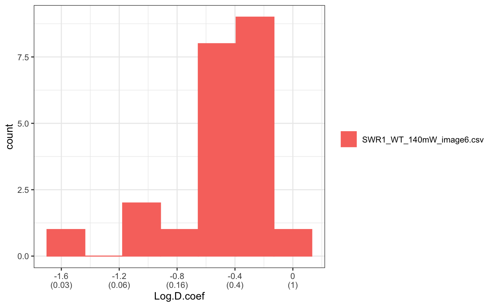
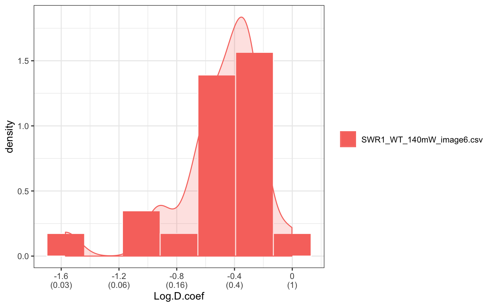
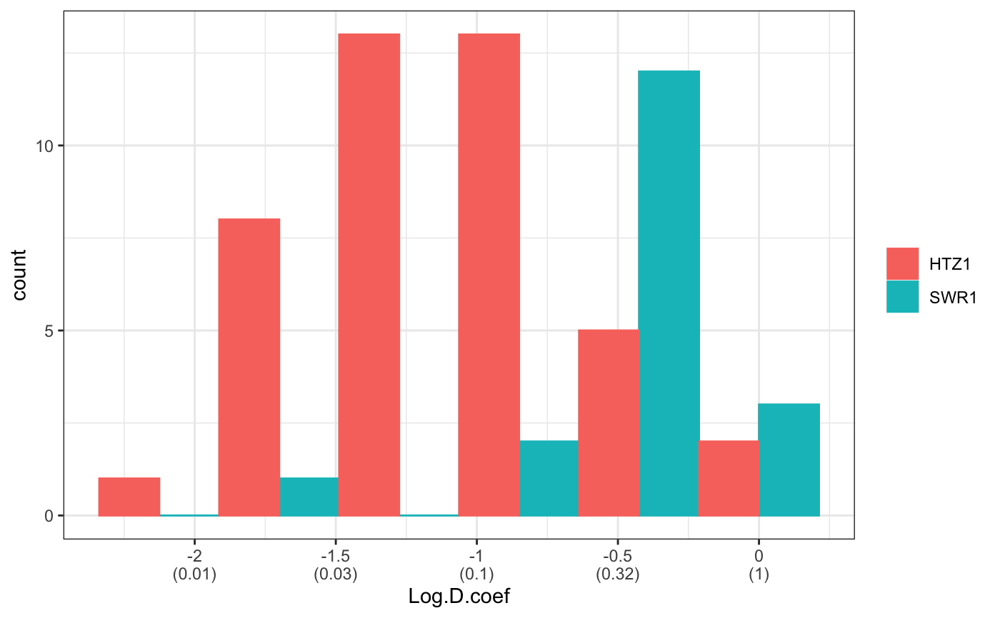
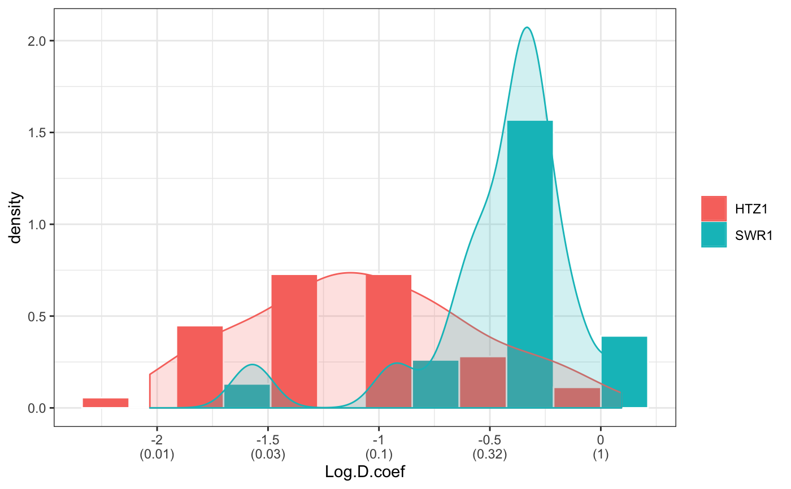
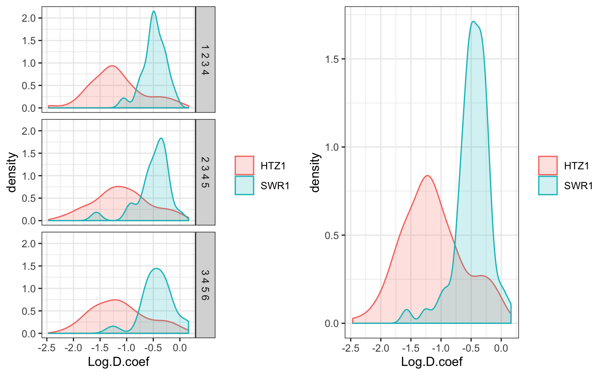

Caclulate diffusion coefficient (Dcoef) for trajecotries.
Dcoef( MSD=NULL,trackll=NULL,dt=6,filter=c(min=7,max=Inf),rsquare=0.8, resolution=0.107, binwidth=NULL, method=c("static","percentage","rolling.window"), plot=FALSE,output=FALSE,t.interval=0.01,profile=NULL)
Arguments
| MSD | Mean Square Displacement calculated using msd() function. Either MSD or trackll can be passed into Dcoef for calculation of diffusion coefficient. |
|---|---|
| trackll | Track list output from readDiatrack(). |
| dt | Time intervals. Default 6. |
| filter | a vector specifies the minimum and max length of trajecotries to be analyzed. Take only trajectories that has number of frames greater than (>=) min and less than (<) max. |
| rsquare | rsquare filter on Dcoef results. Default to be 0.8. Set value to 0 if rsquare filter is not desired. |
| resolution | ratio of pixel to uM. |
| binwidth | binwidth used for histogram. Default NULL, automatically assign binwidth. |
| method | "static", uses time lags 2~5 to calculate diffusion coefficient; "percentage", uses (tierd) percentage (default 0.25) of time lags (see Details). "rolling.window", time lags uses for Dcoef follows a rolling window with specified window size (default 4). |
| plot | A parameter for plotting. Default FALSE, no plot; If TRUE, automatically plots "histogram" with count information, binwidth can be set through parameter binwidth; as well as "density" with density/frequency. |
| output | An Logical indicate if output should be generated. See Values for detail. |
| t.interval | time interval between frames, default 0.010 s (10ms). |
| profile | Location of preference file. By default (NULL), it is stored at : system.file("extdata","PREF","profile.csv",package="sojourner"). User can provide preference file by specifying the location of the file, e.g. profile="/Users/shengliu/Desktop/profile.csv". |
Value
Dcoef A list of Dcoef for each file in trackll.
PDF Log.Dcoef histogram fitted with density curve, when plot = TRUE.
csv Dcoef output in csv format, when output = TRUE.
Details
Generic parameters (parameter applied to all methods, such as resolution etc) are set in the function. Method dependent parameters (such as lag.start, lag.end for method = "static"), are stored in profile.csv in PREF folder under extdata. To change preference parameter, can either programably or manually go to folder system.file("extdata","PREF","profile.csv",package="sojourner"), and c hange the profile.csv.
lag.start: time lag used as start of dt for compute Dcoef. Default 2. lag.end: Time lag used as end of dt for compute Dcoef. Default 2.
method for calculating Dcoef:
static stabilize the number of time lags used for fitting using time lag 2~ 5 despite the total time lags measured.
percentage "percentage", uses (tierd) percentage (default 0.25) of time lags.
[,1] TrackLength Percentage TimeLagsForFitting [,2] 31~ 0.25 2~5-2~7 [,3] 22~30 0.25 2~5-2~7 [,4] 15~21 0.4 2~5-2~7 [,5] 10~15 0.6 2~5-2~7 [,6] 7~9 1 2~5-2~7 [,1] rolling.window time lags uses for Dcoef follows a rolling window with specified window size (default 4).
Examples
# compare files folder=system.file("extdata","SWR1",package="sojourner") trackll = createTrackll(folder=folder, input=3)#> #> Reading ParticleTracker file: SWR1_WT_140mW_image6.csv ... #> #> mage6 read and processed. #> #> Process complete.#> applying filter, min 7 max Inf #> 45 tracks length > & = 1 45 tracks length > & = 2 45 tracks length > & = 3 45 tracks length > & = 4 45 tracks length > & = 5 45 tracks length > & = 6 #> #> ...Dcoef(MSD=MSD,method="static",plot=TRUE)#> #> applying static,lag.start= 2 lag.end= 5 #> lag.start 2 lag.end 5 #> #> Applying r square filter... 0.8#> Warning: NaNs produced#> #> Plotting histogram... #> auto binwidth = 0.2613932#> Warning: Removed 3 rows containing non-finite values (stat_bin).#> #> Plotting density... #> auto binwidth = 0.2613932#> Warning: Removed 3 rows containing non-finite values (stat_bin).#> Warning: Removed 3 rows containing non-finite values (stat_density).# compare folders folder1=system.file("extdata","SWR1",package="sojourner") folder2=system.file("extdata","HTZ1",package="sojourner") trackll2=compareFolder(folders=c(folder1,folder2), input=3)#> #> Reading ParticleTracker file: SWR1_WT_140mW_image6.csv ... #> #> mage6 read and processed. #> #> Process complete. #> #> Merging of folder SWR1 complete. #> #> ... #> #> Reading ParticleTracker file: HTZ1_140mW_WT.csv ... #> #> mW_WT read and processed. #> #> Process complete. #> #> Merging of folder HTZ1 complete. #> #> ...Dcoef(trackll=trackll2,method="percentage",plot=TRUE)#> #> applying percentage, 0.25 #> applying filter, min 7 max Inf #> applying trimmer, min 1 max 31 #> calculating MSD for individual tracks... folder 1 track 1 calculating MSD for individual tracks... folder 1 track 2 calculating MSD for individual tracks... folder 1 track 3 calculating MSD for individual tracks... folder 1 track 4 calculating MSD for individual tracks... folder 1 track 5 calculating MSD for individual tracks... folder 1 track 6 calculating MSD for individual tracks... folder 1 track 7 calculating MSD for individual tracks... folder 1 track 8 calculating MSD for individual tracks... folder 1 track 9 calculating MSD for individual tracks... folder 1 track 10 calculating MSD for individual tracks... folder 1 track 11 calculating MSD for individual tracks... folder 1 track 12 calculating MSD for individual tracks... folder 1 track 13 calculating MSD for individual tracks... folder 1 track 14 calculating MSD for individual tracks... folder 1 track 15 calculating MSD for individual tracks... folder 1 track 16 calculating MSD for individual tracks... folder 1 track 17 calculating MSD for individual tracks... folder 1 track 18 calculating MSD for individual tracks... folder 1 track 19 calculating MSD for individual tracks... folder 1 track 20 calculating MSD for individual tracks... folder 1 track 21 calculating MSD for individual tracks... folder 1 track 22 calculating MSD for individual tracks... folder 1 track 23 calculating MSD for individual tracks... folder 1 track 24 calculating MSD for individual tracks... folder 1 track 25 calculating MSD for individual tracks... folder 1 track 26 calculating MSD for individual tracks... folder 1 track 27 calculating MSD for individual tracks... folder 1 track 28 calculating MSD for individual tracks... folder 1 track 29 calculating MSD for individual tracks... folder 1 track 30 calculating MSD for individual tracks... folder 1 track 31 calculating MSD for individual tracks... folder 1 track 32 calculating MSD for individual tracks... folder 1 track 33 calculating MSD for individual tracks... folder 1 track 34 calculating MSD for individual tracks... folder 1 track 35 calculating MSD for individual tracks... folder 1 track 36 calculating MSD for individual tracks... folder 1 track 37 calculating MSD for individual tracks... folder 1 track 38 calculating MSD for individual tracks... folder 1 track 39 calculating MSD for individual tracks... folder 1 track 40 calculating MSD for individual tracks... folder 1 track 41 calculating MSD for individual tracks... folder 1 track 42 calculating MSD for individual tracks... folder 1 track 43 calculating MSD for individual tracks... folder 1 track 44 calculating MSD for individual tracks... folder 1 track 45 calculating MSD for individual tracks... folder 2 track 1 calculating MSD for individual tracks... folder 2 track 2 calculating MSD for individual tracks... folder 2 track 3 calculating MSD for individual tracks... folder 2 track 4 calculating MSD for individual tracks... folder 2 track 5 calculating MSD for individual tracks... folder 2 track 6 calculating MSD for individual tracks... folder 2 track 7 calculating MSD for individual tracks... folder 2 track 8 calculating MSD for individual tracks... folder 2 track 9 calculating MSD for individual tracks... folder 2 track 10 calculating MSD for individual tracks... folder 2 track 11 calculating MSD for individual tracks... folder 2 track 12 calculating MSD for individual tracks... folder 2 track 13 calculating MSD for individual tracks... folder 2 track 14 calculating MSD for individual tracks... folder 2 track 15 calculating MSD for individual tracks... folder 2 track 16 calculating MSD for individual tracks... folder 2 track 17 calculating MSD for individual tracks... folder 2 track 18 calculating MSD for individual tracks... folder 2 track 19 calculating MSD for individual tracks... folder 2 track 20 calculating MSD for individual tracks... folder 2 track 21 calculating MSD for individual tracks... folder 2 track 22 calculating MSD for individual tracks... folder 2 track 23 calculating MSD for individual tracks... folder 2 track 24 calculating MSD for individual tracks... folder 2 track 25 calculating MSD for individual tracks... folder 2 track 26 calculating MSD for individual tracks... folder 2 track 27 calculating MSD for individual tracks... folder 2 track 28 calculating MSD for individual tracks... folder 2 track 29 calculating MSD for individual tracks... folder 2 track 30 calculating MSD for individual tracks... folder 2 track 31 calculating MSD for individual tracks... folder 2 track 32 calculating MSD for individual tracks... folder 2 track 33 calculating MSD for individual tracks... folder 2 track 34 calculating MSD for individual tracks... folder 2 track 35 calculating MSD for individual tracks... folder 2 track 36 calculating MSD for individual tracks... folder 2 track 37 calculating MSD for individual tracks... folder 2 track 38 calculating MSD for individual tracks... folder 2 track 39 calculating MSD for individual tracks... folder 2 track 40 calculating MSD for individual tracks... folder 2 track 41 calculating MSD for individual tracks... folder 2 track 42 calculating MSD for individual tracks... folder 2 track 43 calculating MSD for individual tracks... folder 2 track 44 calculating MSD for individual tracks... folder 2 track 45 calculating MSD for individual tracks... folder 2 track 46 calculating MSD for individual tracks... folder 2 track 47 calculating MSD for individual tracks... folder 2 track 48 calculating MSD for individual tracks... folder 2 track 49 calculating MSD for individual tracks... folder 2 track 50 calculating MSD for individual tracks... folder 2 track 51 calculating MSD for individual tracks... folder 2 track 52 calculating MSD for individual tracks... folder 2 track 53 calculating MSD for individual tracks... folder 2 track 54 calculating MSD for individual tracks... folder 2 track 55 calculating MSD for individual tracks... folder 2 track 56 calculating MSD for individual tracks... folder 2 track 57 calculating MSD for individual tracks... folder 2 track 58 calculating MSD for individual tracks... folder 2 track 59 calculating MSD for individual tracks... folder 2 track 60 calculating MSD for individual tracks... folder 2 track 61 calculating MSD for individual tracks... folder 2 track 62 calculating MSD for individual tracks... folder 2 track 63 calculating MSD for individual tracks... folder 2 track 64 calculating MSD for individual tracks... folder 2 track 65 calculating MSD for individual tracks... folder 2 track 66 calculating MSD for individual tracks... folder 2 track 67 calculating MSD for individual tracks... folder 2 track 68 calculating MSD for individual tracks... folder 2 track 69 calculating MSD for individual tracks... folder 2 track 70 calculating MSD for individual tracks... folder 2 track 71 calculating MSD for individual tracks... folder 2 track 72 calculating MSD for individual tracks... folder 2 track 73 calculating MSD for individual tracks... folder 2 track 74 calculating MSD for individual tracks... folder 2 track 75 calculating MSD for individual tracks... folder 2 track 76 calculating MSD for individual tracks... folder 2 track 77 calculating MSD for individual tracks... folder 2 track 78 calculating MSD for individual tracks... folder 2 track 79 calculating MSD for individual tracks... folder 2 track 80 calculating MSD for individual tracks... folder 2 track 81 calculating MSD for individual tracks... folder 2 track 82 calculating MSD for individual tracks... folder 2 track 83 calculating MSD for individual tracks... folder 2 track 84 calculating MSD for individual tracks... folder 2 track 85 calculating MSD for individual tracks... folder 2 track 86 calculating MSD for individual tracks... folder 2 track 87 calculating MSD for individual tracks... folder 2 track 88 calculating MSD for individual tracks... folder 2 track 89 calculating MSD for individual tracks... folder 2 track 90 calculating MSD for individual tracks... folder 2 track 91 calculating MSD for individual tracks... folder 2 track 92 calculating MSD for individual tracks... folder 2 track 93 calculating MSD for individual tracks... folder 2 track 94 calculating MSD for individual tracks... folder 2 track 95 calculating MSD for individual tracks... folder 2 track 96 calculating MSD for individual tracks... folder 2 track 97 calculating MSD for individual tracks... folder 2 track 98 calculating MSD for individual tracks... folder 2 track 99 calculating MSD for individual tracks... folder 2 track 100 calculating MSD for individual tracks... folder 2 track 101 calculating MSD for individual tracks... folder 2 track 102 calculating MSD for individual tracks... folder 2 track 103 calculating MSD for individual tracks... folder 2 track 104 calculating MSD for individual tracks... folder 2 track 105 calculating MSD for individual tracks... folder 2 track 106 calculating MSD for individual tracks... folder 2 track 107 calculating MSD for individual tracks... folder 2 track 108 calculating MSD for individual tracks... folder 2 track 109 calculating MSD for individual tracks... folder 2 track 110 calculating MSD for individual tracks... folder 2 track 111 calculating MSD for individual tracks... folder 2 track 112 calculating MSD for individual tracks... folder 2 track 113 calculating MSD for individual tracks... folder 2 track 114 calculating MSD for individual tracks... folder 2 track 115 calculating MSD for individual tracks... folder 2 track 116 calculating MSD for individual tracks... folder 2 track 117 calculating MSD for individual tracks... folder 2 track 118 calculating MSD for individual tracks... folder 2 track 119 calculating MSD for individual tracks... folder 2 track 120 calculating MSD for individual tracks... folder 2 track 121 calculating MSD for individual tracks... folder 2 track 122 #> #> Applying r square filter... 0.8#> Warning: NaNs produced#> Warning: NaNs produced#> #> Plotting histogram... #> auto binwidth = 0.4251506#> Warning: Removed 6 rows containing non-finite values (stat_bin).#> #> Plotting density... #> auto binwidth = 0.4251506#> Warning: Removed 6 rows containing non-finite values (stat_bin).#> Warning: Removed 6 rows containing non-finite values (stat_density).Dcoef(trackll=trackll2,method="rolling.window",plot=TRUE)#> #> applying rolling window... #> applying filter, min 7 max Inf #> 45 tracks length > & = 1 45 tracks length > & = 2 45 tracks length > & = 3 45 tracks length > & = 4 45 tracks length > & = 5 45 tracks length > & = 6 #> #> ... #> 122 tracks length > & = 1 122 tracks length > & = 2 122 tracks length > & = 3 122 tracks length > & = 4 122 tracks length > & = 5 122 tracks length > & = 6 #> #> ... #> [1] 1 2 3 4 #> [1] 2 3 4 5 #> [1] 3 4 5 6 #> [1] 1 2 3 4 #> [1] 2 3 4 5 #> [1] 3 4 5 6 #> #> Applying r square filter... 0.8 #> #> Applying r square filter... 0.8 #> #> Applying r square filter... 0.8 #> #> Applying r square filter... 0.8 #> #> Applying r square filter... 0.8 #> #> Applying r square filter... 0.8#> Warning: NaNs produced#> Warning: NaNs produced#> Warning: NaNs produced#> #> Plotting histogram... #> auto binwidth = 0.2921864#> Warning: Removed 13 rows containing non-finite values (stat_bin).#> Warning: Removed 13 rows containing non-finite values (stat_bin).#> Warning: Removed 13 rows containing non-finite values (stat_density).#> #> Plotting density... #> auto binwidth = 0.2921864#> Warning: Removed 13 rows containing non-finite values (stat_density).#> Warning: Removed 13 rows containing non-finite values (stat_density).